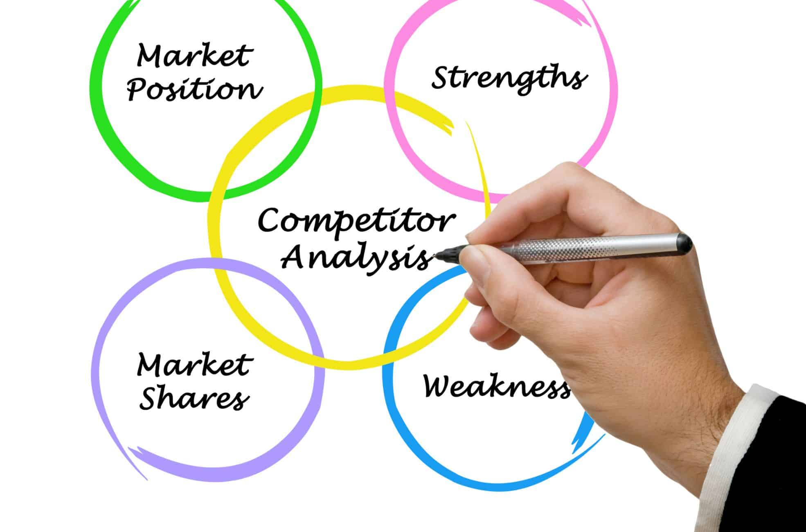

This project focused on developing a comprehensive solution to optimize the steel manufacturing process.
By leveraging advanced analytics and machine learning techniques, we identified the ideal combination of raw materials
and energy inputs to enhance steel quality while minimizing costs and energy usage.
Tools Used: SQL, PYTHON, TABLEAU, GOOGLE LS, MICROSOFT EXCEL

The goal of this project was to perform an Exploratory Data Analysis (EDA) on an e-commerce store's past data to uncover trends and patterns in customer behavior, purchasing habits, marketing impact, pricing effectiveness, and product quality. The insights derived will inform strategic recommendations to improve business operations, customer retention, and profitability.
Tools Used: Microsft Excel (VLOOKUP, PIVOT TABLES, CHARTS)

This project aims to develop a platform (Afriglow) that enables Nigerian beauty brands to sell directly to global consumers, retailers, and beauty stores, simplifying export processes and increasing market reach. We conducted market research on global consumer preferences and buying behaviors. Analyzed industry trends, focusing on demand for natural and organic beauty products and Identified market gaps and propose innovative solutions.
Tools Used: PYTHON(BeautifulSoup), OCTOPARSE, MICROSEFT EXCEL CHARTS
This project involves the preprocessing and sentiment analysis of news article content using Python and natural language processing (NLP) techniques. It includes text cleaning, tokenization, lemmatization, visualization, and sentiment categorization of textual data from news articles.
Tools Used: PYTHON( Pandas, Selenium, Matplotlib, Seaborn, Wordcloud, nltk, Scikit-Learn)

A comprehensive analysis of cancer patient data from the UAE, featuring exploratory data analysis, predictive modeling for cancer staging, and patient clustering for personalized treatment strategies.
Tools Used: PYTHON( Pandas, Matplotlib, Seaborn, Scikit- Learn, Feature Engine)